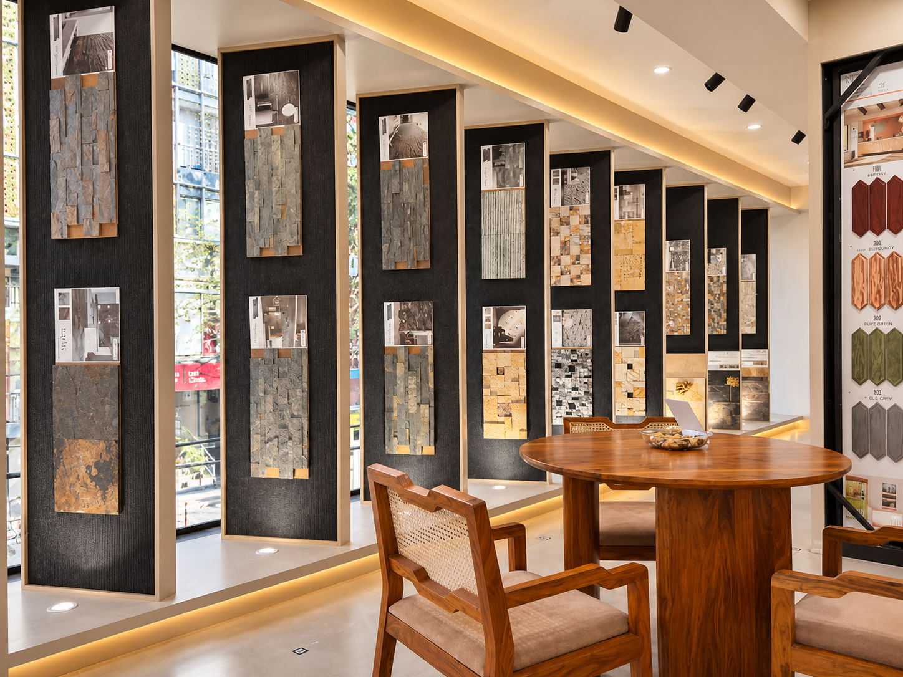
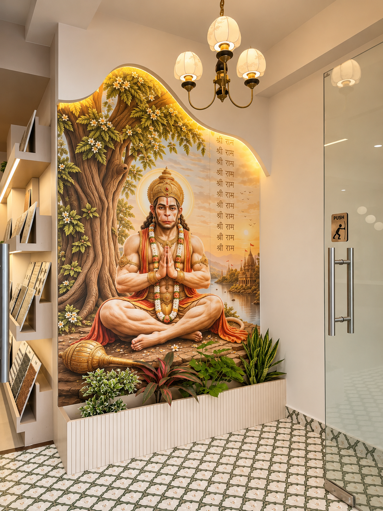
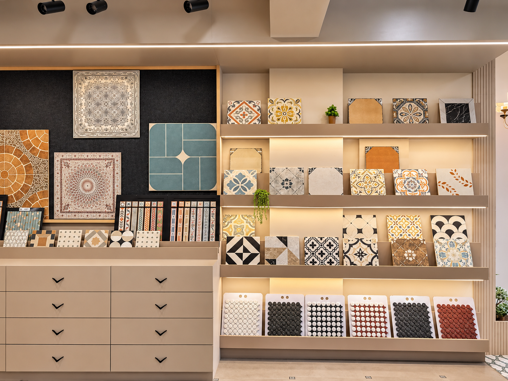
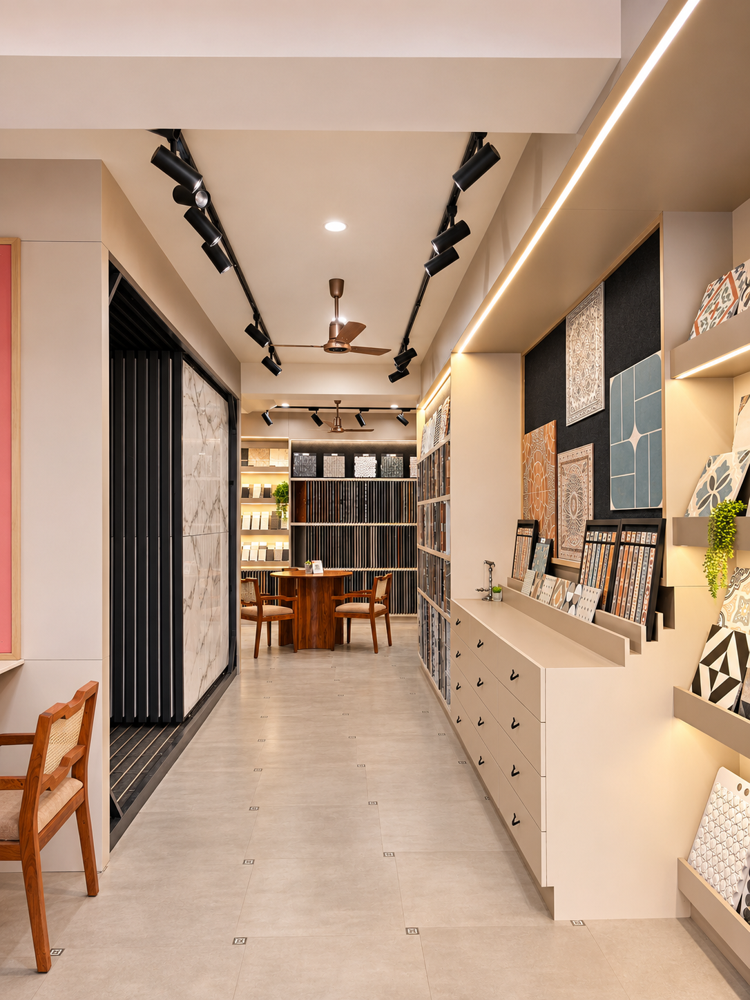
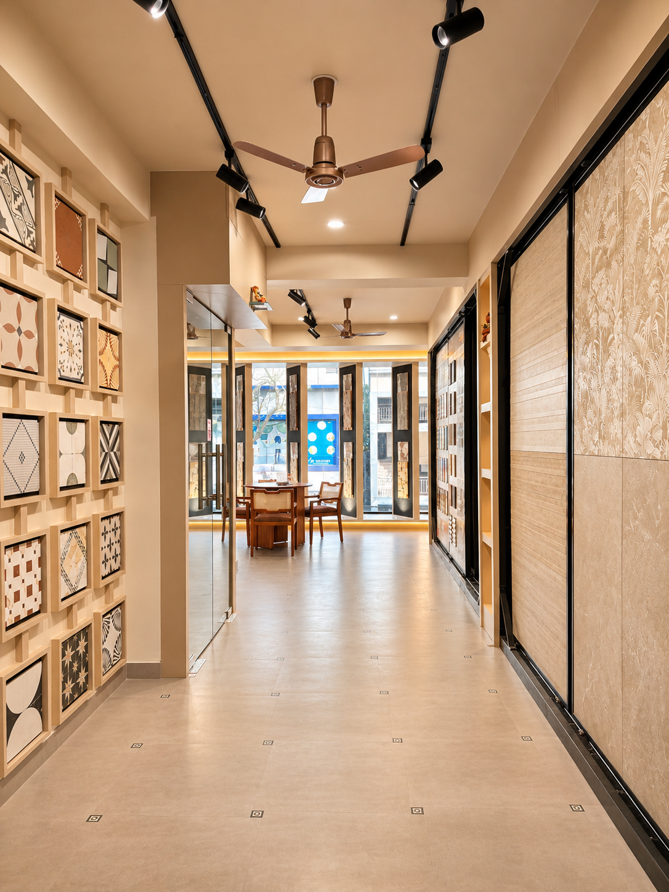
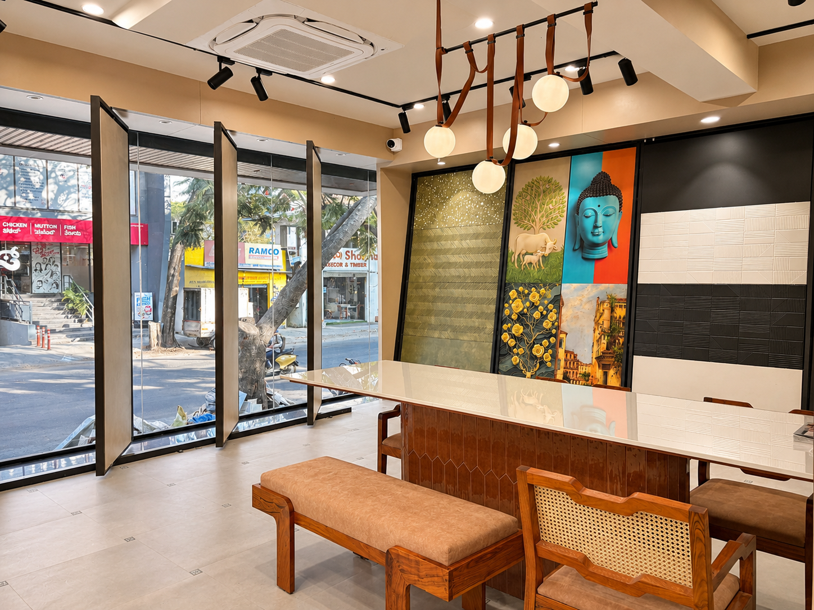
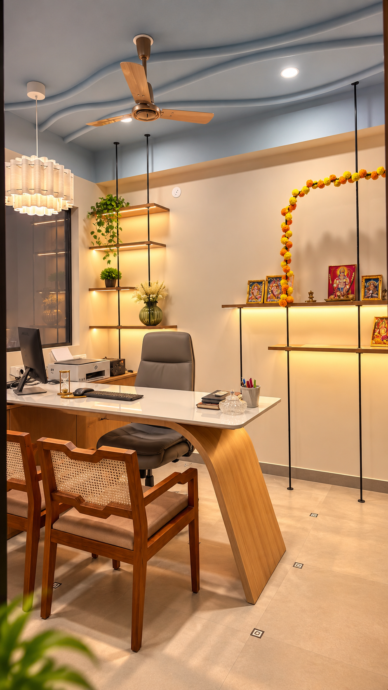
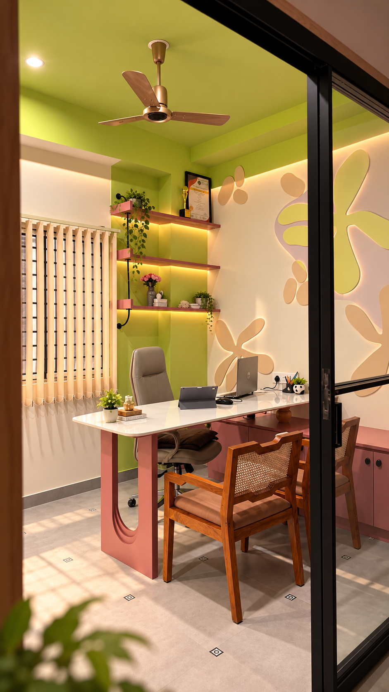

Retail Interior
Project Overview
Anjanadri Ceramic Studio was envisioned as a premium tile showroom that moves beyond the conventional retail experience. The space was designed to create a calm, tactile and immersive environment where materials can be explored, compared and experienced.
Bangalore, Karnataka
3,000 sq. ft.
Interior Design & Execution
2026

A design-led showroom created to make the experience of selecting materials as considered as the spaces they become part of.
The Design Approach
The showroom was conceived as an immersive material library rather than a conventional tile store. Dark textured display walls create a strong backdrop for the tiles, while warm lighting, natural wood and neutral surfaces bring balance and softness to the space.
Each display was carefully composed to give the materials visual presence while maintaining a calm and cohesive spatial language throughout the showroom.


MATERIAL AS EXPERIENCE
The showroom was planned to let materials speak for themselves. Individual display walls create moments of pause, allowing textures, patterns and finishes to be viewed without visual distraction. The result is a space where choosing a tile becomes part of the design experience itself.

WARMTH & CONTRAST
Dark textured surfaces were paired with warm wood, soft lighting and neutral tones to create contrast without overwhelming the space. The material palette gives the showroom a sense of warmth and depth, while keeping the focus firmly on the tiles and their finishes.


DESIGNED FOR DISCOVERY
The layout was designed to encourage exploration rather than simply display products. From intimate consultation areas to carefully planned display walls, the space allows clients and designers to move through the showroom, discover possibilities and make decisions with clarity.
PRIVATE WORKSPACES
The consultation and workspaces were designed as an extension of the showroom itself — warm, functional and thoughtfully detailed. These spaces create a comfortable setting for conversations, selections and the everyday work behind the experience.


Let’s Create
Every space has a story waiting to be told. Let’s create one that feels uniquely yours.
Start Your Project →